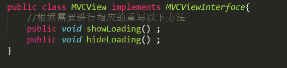

MVP 这种模式出现已经很久了，在网上有些关于 MVP 开源代码2014年就有了。近期由于面试都有问这方面的问题，所以来了解一下。网上关于 MVP 的资料其实也不少，通常都要把 MVP 和 MVC 做一下比较，MVC通常一般都会应用，这篇文章就来学习下MVP模式。
一、什么是MVP？
随着UI创建技术的功能日益增强，UI层也履行着越来越多的职责。为了更好地细分视图(View)与模型(Model)的功能，让View专注于处理数据的可视化以及与用户的交互，同时让Model只关系数据的处理，基于MVC概念的MVP(Model-View-Presenter)模式应运而生。
MVP 是 Model、Presenter、View 的缩写，三个部分的关系如下图所示。
在 Android 项目中，负责界面展示的模块（所有的 Activitiy 、Fragment以及 View 的子类）都可以划分到 View 这个层次，所有的业务逻辑处理（请求网络数据、数据库读取等）可以划分到 Model 这个层次，为了使得 View 和 Model 之间松耦合，用 Presenter 帮助解耦。所以可以猜测，在具体实现中 Presenter 类肯定要持有 View 和 Model 的引用。现在来说一下，上图中三个箭头的意思。流程是这样子的，从左到右看，比如我们刚进入一个 Activity，那么这个 Activity 做为 View 层，肯定需要通知 Presenter 加载数据，而Presenter会继续调用Model层加载数据，等Model加载完毕后，回调给 Presenter，Presenter 持有View引用，再通知View更新界面。
MVP模式的三个角色的作用：
- Presenter-中介
主演沟通View和Model的桥梁，他从Model获取数据后返回给View层，是的View层和Model层之间没有耦合，从而奖业务逻辑从View层抽离。 - Model-房主
Model主要提供数据的存取、检索、操纵功能，Presenter需要通过Model层存储、获取数据，Model层就想是一个仓库。 - View-用户
负责绘制UI元素、与用户进行交互(在Android中体现为Activity)。View通常是指Activity、Fragment或者某个View控件。它含有一个Presenter成员变量，同时它需要实现一个逻辑接口，奖View上的操作转交割Presenter进行实现，最后Presenter调用View逻辑接口将结果返回给View元素。 - View interface
需要View实现的接口，View通过View interface与Presenter进行交互，降低耦合，方便进行单元测试;
为什么使用MVP模式
在Android开发中，Activity并不是一个标准的MVC模式中的Controller，它的首要职责是加载应用的布局和初始化用户界面，并接受并处理来自用户的操作请求，进而作出响应。随着界面及其逻辑的复杂度不断提升，Activity类的职责不断增加，以致变得庞大臃肿。当我们将其中复杂的逻辑处理移至另外的一个类（Presneter）中时，Activity其实就是MVP模式中View，它负责UI元素的初始化，建立UI元素与Presenter的关联（Listener之类），同时自己也会处理一些简单的逻辑（复杂的逻辑交由Presenter处理）.
另外，回想一下你在开发Android应用时是如何对代码逻辑进行单元测试的？是否每次都要将应用部署到Android模拟器或真机上，然后通过模拟用户操作进行测试？然而由于Android平台的特性，每次部署都耗费了大量的时间，这直接导致开发效率的降低。而在MVP模式中，处理复杂逻辑的Presenter是通过interface与View(Activity)进行交互的，这说明了什么？说明我们可以通过自定义类实现这个interface来模拟Activity的行为对Presenter进行单元测试，省去了大量的部署及测试的时间。
MVP与MVC的异同
MVC模式与MVP模式都作为用来分离UI层与业务层的一种开发模式被应用了很多年。在我们选择一种开发模式时，首先需要了解一下这种模式的利弊：
无论MVC或是MVP模式都不可避免地存在一个弊端：
额外的代码复杂度及学习成本。
这就导致了这两种开发模式也许并不是很小型应用。
但比起他们的优点，这点弊端基本可以忽略了：
- (1)降低耦合度
- (2)模块职责划分明显
- (3)利于测试驱动开发
- (4)代码复用
- (5)隐藏数据
- (6)代码灵活性
MVP模式：
- View不直接与Model交互，而是通过与Presenter交互来与Model间接交互
- Presenter与View的交互是通过接口来进行的，更有利于添加单元测试
- 通常View与Presenter是一对一的，但复杂的View可能绑定多个Presenter来处理逻辑
MVC模式：
- View可以与Model直接交互
- Controller是基于行为的，并且可以被多个View共享
- 可以负责决定显示哪个View
二、MVP的效果
现在我们来实现这样一个Android上的Demo(如图)：可以从EditText读取用户信息并存取，也可以根据ID来从后台读出用户信息并显示。

页面布局很简单，就不介绍了。下面根据MVP原则来进行编码：
先来看看java文件的目录结构：

可以发现，Presenter与Model、View都是通过接口来进行交互的，既降低耦合也方便进行单元测试。
- (1)首先我们需要一个UserBean，用来保存用户信息
public class UserBean {
private String mFirstName ;
private String mLastName ;
public UserBean (String firstName, String lastName) {
this.mFirstName = firstName;
this.mLastName = lastName;
}
public String getFirstName() {
return mFirstName ;
}
public String getLastName() {
return mLastName ;
}
}
- (2)再来看看View接口：
根据需求可知，View可以对ID、FirstName、LastName这三个EditText进行读操作，对FirstName和LastName进行写操作，由此定义IUserView接口：
public interface IUserView {
int getID();
String getFristName();
String getLastName();
void setFirstName (String firstName);
void setLastName (String lastName);
}
- (3)Model接口：
同样，Model也需要对这三个字段进行读写操作，并存储在某个载体内(这不是我们所关心的，可以存在内存、文件、数据库或者远程服务器，但对于Presenter及View无影响),定义IUserModel接口：
public interface IUserModel {
void setID (int id);
void setFirstName (String firstName);
void setLastName (String lastName);
int getID();
UserBean load (int id);//通过id读取user信息,返回一个UserBean
}
- (4)Presenter:
至此，Presenter就能通过接口与View及Model进行交互了：
public class UserPresenter {
private IUserView mUserView ;
private IUserModel mUserModel ;
public UserPresenter (IUserView view) {
mUserView = view;
mUserModel = new UserModel ();
}
public void saveUser( int id , String firstName , String lastName) {
mUserModel .setID (id );
mUserModel .setFirstName (firstName );
mUserModel .setLastName (lastName );
}
public void loadUser( int id ) {
UserBean user = mUserModel .load (id );
mUserrView .setFirstName (user .getFirstName ());//通过调用IUserView的方法来更新显示
mUserView .setLastName (user .getLastName ());
}
}
- (5)UserActivity:
UserActivity实现了IUserView及View.OnClickListener接口，同时有一个UserPresenter成员变量：
public class UserActivity extends Activity implements OnClickListener,
IUserView {
private EditText mFirstNameEditText , mLastNameEditText , mIdEditText ;
private Button mSaveButton , mLoadButton ;
private UserPresenter mUserPresenter ;
重写了OnClick方法：
@Override
public void onClick(View v) {
// TODO Auto-generated method stub
switch ( v. getId()) {
case R .id .saveButton :
mUserPresenter .saveUser (getID (), getFristName (),
getLastName ());
break ;
case R .id .loadButton :
mUserPresenter .loadUser (getID ());
break ;
default :
break ;
}
}
可以看到，View只负责处理与用户进行交互，并把数据相关的逻辑操作都扔给了Presenter去做。而Presenter调用Model处理完数据之后，再通过IUserView更新View显示的信息。
三、MVP的Android伪代码实现
-
首先需要一个Presenter，作为View和Model的中间人

20170227148819813736752 -
然后你还需要一个View以及ViewImpl接口
 2017022714881981564410

- 最后你还需要Model一个ModelImpl接口

20170227148819817269813
四、不必纠结是MVC还是MVP
MVC和MVP的最终目的就是要数据和UI分离，互相不影响。那么如何能不必纠结而做到呢？？你听说过面向对象吗？听过再听听我的理解~
- 面向对象
封装、多态，继承。老师好像也都是这么教的，那么到底说明是多态封装继承呢？ - 封装
封装就是将用户不想看到的东西封装起来，可以用到面向对象中的 Private
属性，将用户不想看到的内容写在这里面。比如收音机上的播放功能，用户不用知道收益及如何播放，它只需要知道摁下这个键能播放即可。 - 多态
多态就是一个对象的多种表现形态，主要表现为：行为多态和状态多态。
行为多态就好比一个父亲有多个孩子，每个孩子都不一样，但是都是同一个父亲；状态多态就好比每个孩子在一天中有好多个状态变现，有吃饭，学习，睡觉。 - 继承？不！我想说的是对象！
我的一个朋友告诉我继承其实是对面向对象的最大误解。继承我们可以理解成一个对象他有多个小对象组成；比如人这个对象是由手脚，脑袋...等其它小对象组成。因此继承我们可以不去记住，我们只要对每个对象有深刻的认识即可把对象描述清楚！
那么MVC、MVP与面向对象有什么关系呢？？
首先MVC和MVP都是要求数据和UI之间互不影响，那么面向对象不就是吗！？
-
面向对象View?
对象也就是我们说的用户也就是MC或者MVP中View，用户需要什么我们就展示给其什么，不需要的我们将其封装起来提供一个方法给你调用即可，这是不是和MVC或者MVP中很像！ -
面向对象Model?
同时面向对象也是需要将对象的行为细分，比如人可以跑，可以游泳...这是不是和MVC中的Model一样，需要处理用户不同的操作。 -
面向对象Controller?
最后面向对象也是需要一个状态去控制的，比如人的大脑。通过大脑去协调手和脚的平衡。
五、内存泄露问题
由上可见，Presenter中持有View接口对象，这个接口对象实际为MainActivity.this，Modle中也同时拥有Presenter对象实例，当MainActivity要销毁时，Presenter中有Modle在获取数据，那么问题来了，这个Activity还能正常销毁吗？
答案是不能！
当Modle在获取数据时，不做处理，它就一直持有Presenter对象，而Presenter对象又持有Activity对象，这条GC链不剪断，Activity就无法被完整回收。
换句话说：Presenter不销毁，Activity就无法正常被回收。
解决MVP的内存泄露
Presenter在Activity的onDestroy方法回调时执行资源释放操作，或者在Presenter引用View对象时使用更加容易回收的软引用，弱应用。
比如示例代码：
Activity
@Override
public void onDestroy() {
super.onDestroy();
mPresenter.destroy();
mPresenter = null;
}
Presenter
public void destroy() {
view = null;
if(modle != null) {
modle.cancleTasks();
modle = null;
}
}
Modle
public void cancleTasks() {
// TODO 终止线程池ThreadPool.shutDown()，AsyncTask.cancle()，或者调用框架的取消任务api
}
个人总结
因为面向MVP接口编程，可适应需求变更，所以MVP适用于比较大的项目；因为其简化了Activity和Fragmnt的职责，可大大减少View层的代码量，比起MVC中Activity，Fragment动不动上千行的代码量，简直优雅！
六、总结
最后重新梳理一下 MVP 的编写方式。
- 1、 根据项目需求，写一个 XXView 接口。然后让对应的 Activity/Fragment 实现这个接口。View 层基本搞定！
- 2、编写 Model 层，主要就是网络数据请求了或者其他什么耗时操作，实现方式尽情发挥你的想象，但是最后一定需要用 Presenter 层定义的接口，回调给 Presenter 通知 View 层 更新数据。
- 3、编写 Presenter 层，Presenter 层需要持有 View 层和 Model层的引用，并且实现 Presenter 层定义的回调接口。在回调接口中调用 View 层的代码 进行界面更新，最重要的是，有一个调用通过Model层的方法，在此方法中，调用 Model 层请求数据。
- 4、回到View 层的Activity ，调用 Presenter 层获取数据。到此完成。
因为面向MVP接口编程，可适应需求变更，所以MVP适用于比较大的项目；因为其简化了Activity和Fragmnt的职责，可大大减少View层的代码量，比起MVC中Activity，Fragment动不动上千行的代码量，简直优雅！
**备注：**为了遵守面向接口编程的原则，做了一下接口的抽取。如Presenter 中 实现了 JokePresenter 接口，Model 层中实现了 JokeModel 接口。好了，如果在阅读中，发现了有错误的地方，还望指正。